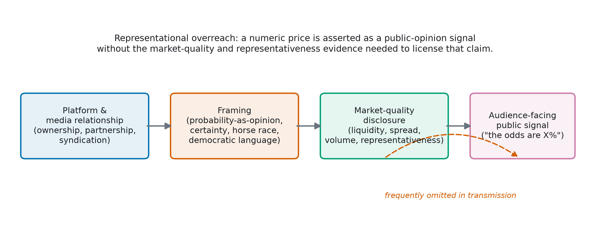
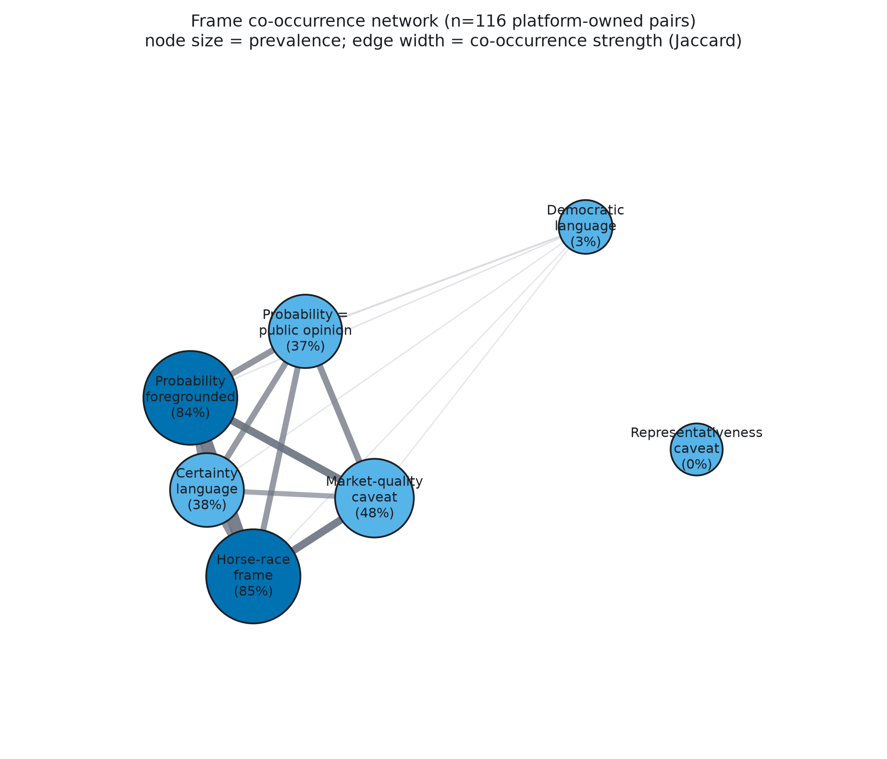
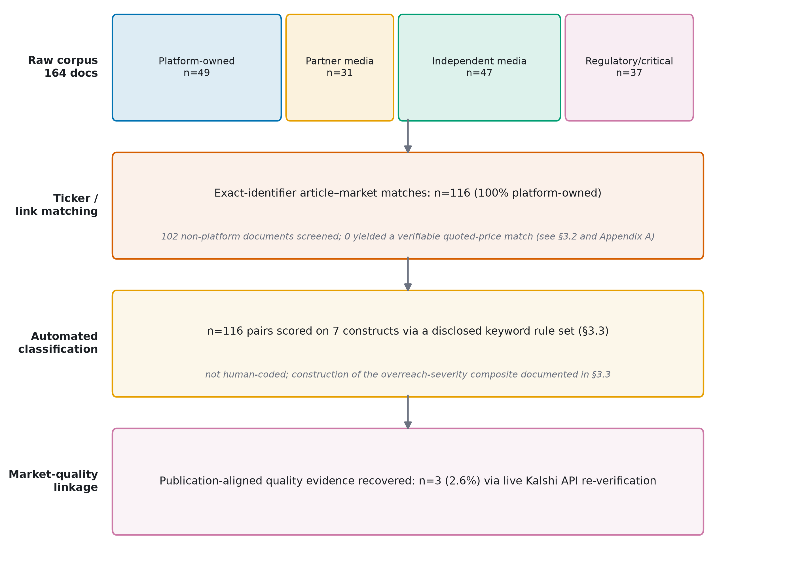
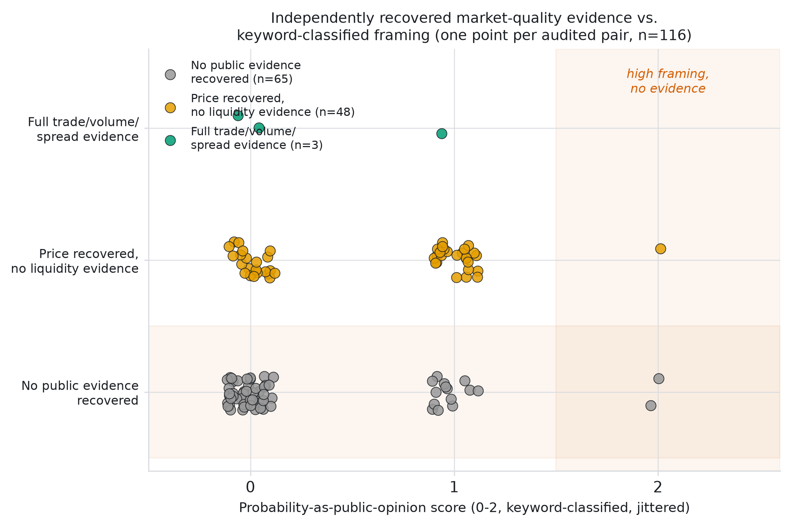
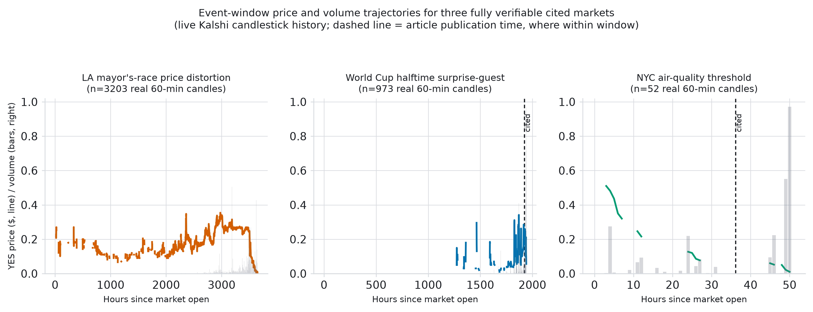
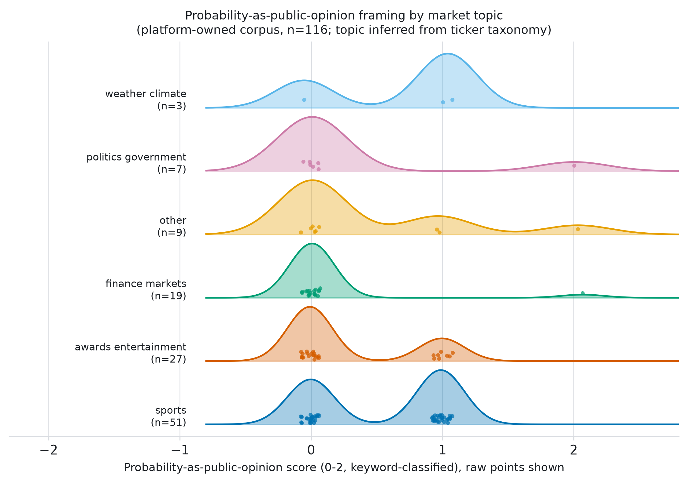
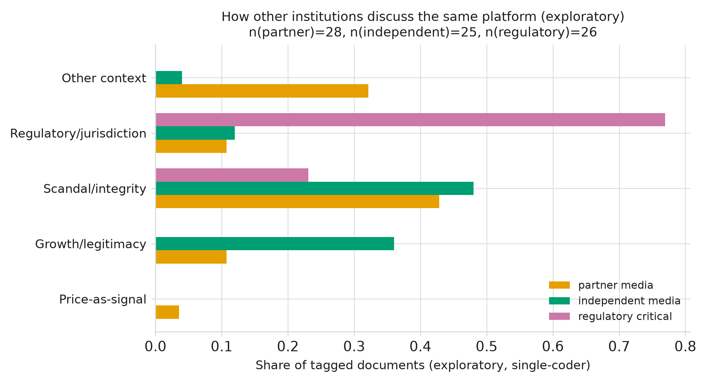

A sentence like "traders put the odds at 70%" asks a reader to accept two things at once: a number, and an interpretation of that number as a statement about what people believe. The number comes from a trading mechanism operating over a specific population of participants and a specific window of time. The interpretation — that the number stands for public opinion, or for near-certainty, or for a contest with a clear front-runner — is a separate claim, and it is one a platform can choose to make or withhold regardless of how thin or thick the underlying market actually is. Whether a market probability is a reasonable proxy for collective belief depends on participation, liquidity, and price stability at the moment it is quoted (Wolfers & Zitzewitz, 2004, 2006; Manski, 2006); it is not guaranteed by the mere existence of a number.
This paper asks a narrower question than "does media coverage of prediction markets overreach," because answering that question well would require a cross-institutional dataset this project could not responsibly assemble (§3.2). Instead it asks: when Kalshi writes about its own markets for a public audience, how does it frame the relationship between a traded price and public belief, and is that framing calibrated to how liquid or stable the specific contract actually is? A third, practical question follows from the first two: can an outside reader — using the same public record a journalist or researcher would have — actually verify the liquidity conditions a given framing choice would require? I find that the answer to the third question is usually no, and that this is not incidental to the first two.
I call the object of study representational overreach: presenting a trading price as an objective probability or public-sentiment signal without the market conditions — liquidity, price stability, breadth of participation — that would be needed to license that presentation. Overreach in this sense is not a claim that Kalshi's prices are wrong. It concerns a gap between what a piece of public writing implies about a number and what can be shown about the market that produced it. A methodological note belongs up front, because it shapes every result that follows: the framing constructs in this paper are measured by a disclosed, deterministic keyword classifier, not by trained human coders, and I treat that distinction as a first-order fact about the evidence rather than a footnote (§3.3).
The primary corpus is 49 platform-published articles from Kalshi's own news and blog output, collected between November 2025 and July 2026. Exact-identifier and market-link matching against the Kalshi and Polymarket contract catalogs produced 116 audited article–market pairs, each linking one piece of platform writing to one specific contract it discusses. This is the unit of analysis for every quantitative result in §4–7. Figure 1 sketches the relationship the paper is built to test; Figure 3 reports the corpus-to-analysis pipeline with exact counts.

An earlier version of this project also tried to match quoted prices in partner, independent, and regulatory sources (CNN, the Associated Press, the CFTC, congressional offices) to specific contracts, so that framing could be compared across source types with the same instrument used here. That attempt is reported in full in Appendix A. In short: of 102 non-platform documents screened for the same exact-identifier and quoted-price pattern, zero produced a matchable pair. This is not a shortfall in effort or in the matching procedure — it reflects how these sources actually write about prediction markets. Wire stories and regulatory releases in this period discuss insider-trading cases, state litigation, and sponsorship deals; they do not, in the documents collected here, quote a specific contract's price the way platform writing routinely does. Given that, treating the two kinds of writing as directly comparable on the same quantitative instrument would have overstated what the data can support. The paper is scoped accordingly: the coded, quantitative analysis is about platform writing, and the cross-source material appears only as a secondary, explicitly exploratory check (§5.1, Appendix A) on whether the framing this paper measures is specific to the platform or common to anyone who writes about it.
Each of the 116 article–market pairs is scored on seven constructs — whether a probability is foregrounded; whether it is framed as public opinion; whether a representativeness or market-quality caveat is present; certainty language; democratic-voice language; horse-race framing; and a composite overreach-severity score (0–3) — by a disclosed, deterministic keyword classifier (scripts/auto_fill_stage3_ai_coders.py), applied uniformly to each article's title, excerpt, and matched evidence text. This is stated plainly because the repository's annotation files carry a coding history that could otherwise be misread: the codebook (docs/codebook.md) was originally written for a two-human double-coding design, and the annotation sheets still carry fields named coder_id and double_code. In the data actually used here, both "coders" are the same keyword classifier, and the second pass applies a small artificial perturbation to a subset of rows rather than an independent human judgment. No inter-coder reliability statistic is reported anywhere in this paper, and none should be inferred from those field names. Appendix C documents the classifier's keyword lexicons and the exact rule used to compose the overreach-severity score from the other six constructs.
That composition rule creates a limit on what can be done with the severity score, and it is worth stating precisely. Overreach severity is not a seventh, independently measured construct: it is a deterministic function of probability-as-public-opinion, market-quality caveat, democratic language, and horse-race framing (Table 2, Appendix C). A regression of severity on those same constructs would therefore describe the classifier's own arithmetic, not an empirical relationship discovered in the text, and this paper does not report one. Table 1 instead reports construct prevalence directly — a plain count of keyword patterns in real text, which is not circular — and every place this paper compares framing to something else (market-quality evidence in §6, topic in §7), it compares against a single directly-measured construct rather than the severity composite. One construct, the representativeness caveat, was scored 0 for all 116 pairs; this is reported as a descriptive fact (no article in this sample was classified as disclosing anything about who is actually trading a given contract) rather than as an estimated effect.
Rather than take the platform's own summary statistics at face value, I re-queried Kalshi's trade, market, and candlestick endpoints directly for every cited contract. For each of the 116 pairs, the procedure attempted, in order: (1) trade-level data in a ±24-hour window around publication time, using the historical endpoint when publication preceded Kalshi's historical cutoff (2026-05-24) and the live endpoint otherwise; (2) minute-level candlestick reconstruction when no trade-level data was available; (3) the article's own quoted price as a last-resort price fallback, never as a substitute for liquidity evidence. All 86 uniquely cited tickers were separately queried against the live single-market endpoint to check whether the contract is independently checkable at all, regardless of what liquidity detail it would show. Unlike the classifier in §3.3, this verification does not depend on any interpretive judgment: a trade either appears in the queried window or it does not. All figures below report exactly what these queries returned as of 2026-07-23.
Table 1 reports how often each construct is detected in the 116 audited pairs — a direct count of keyword patterns, not an inferential estimate. Probability framing (84%) and horse-race framing (85%) are close to universal; explicit democratic-voice language is rare (3%); some form of market-quality caveat is detected in 48% of pairs, though §6 shows this figure is a poor guide to whether quality evidence is actually available for the specific contract in question.
| Construct | Prevalence |
|---|---|
| Probability foregrounded | 84% |
| Probability = public opinion | 37% |
| Representativeness caveat | 0% |
| Market-quality caveat | 48% |
| Certainty language | 38% |
| Democratic language | 3% |
| Horse-race frame | 85% |


Table 2 documents the deterministic rule that composes the overreach-severity score from the other constructs (full lexicons in Appendix C). It is reported here as documentation of the classifier, not as an estimated model: because severity is arithmetic on the same inputs, a regression of severity on those inputs would be tautological, and none is reported. Horse-race framing and probability-as-public-opinion framing enter the rule directly and are the two constructs that push a pair toward the highest severity tiers; a detected market-quality caveat is the one input that pulls severity down.
| Condition (evaluated in order) | Severity |
|---|---|
| No probability foregrounded, no public-opinion framing, no horse-race framing | 0 |
| Public-opinion framing at the explicit level (2), or democratic language at the explicit level (2) | 3 |
| Public-opinion framing at the ambiguous level (1); or probability foregrounded and horse-race framing present and no market-quality caveat detected | 2 |
| Probability foregrounded or horse-race framing present (and none of the above) | 1 |
| Otherwise | 0 |
Appendix A reports a smaller, single-coder pass over the 102 non-platform documents described in §3.2, using a disclosed keyword rule applied by hand rather than the automated classifier in §3.3, since no quoted-price match was available to apply that classifier to. That pass is exploratory and is not pooled with any measurement in this paper. It is included because it bears on how the main finding should be interpreted: regulatory and congressional sources discuss the platform through a jurisdiction or regulatory frame in 77% of tagged documents and essentially never through a price-as-signal frame; independent wire coverage splits between scandal/integrity content (48%) and growth/legitimacy content (36%); partner-media coverage (CNN broadcast transcripts) is dominated by scandal/integrity content (43%), most of it repeated coverage of one insider-trading story across several broadcasts. None of the three source types use the probability-as-public-opinion frame at a rate approaching what appears in the platform's own writing. Taken as context rather than as evidence on its own, this pattern supports the reading offered here: the numeric, opinion-equivalent framing this paper measures looks like something the platform does about itself, and something almost no one else does when describing it.
Figure 4 places every audited pair on two axes: the probability-as-public-opinion score (0–2, keyword-classified) and the tier of market-quality evidence recovered by independent re-query. Of 116 pairs, 65 (56%) returned no public evidence at all; 48 (41%) returned a historical price with no accompanying liquidity information; 3 (2.6%) returned full trade-count, volume, and spread evidence. None of those three fully-evidenced pairs carries the strongest public-opinion framing (score 2); two score 0 and one scores 1. The three pairs that do carry the strongest framing are split between the no-evidence and price-only tiers. Framing intensity, in other words, is not concentrated among the contracts an outside reader could actually verify — if anything the opposite.

Beyond the 116-pair linkage, the live single-market endpoint was queried for all 86 uniquely cited tickers to answer a narrower question: is the cited contract checkable at all, independent of what liquidity detail it would show. Only 4 of 86 (4.7%) returned a live record. Of the 35 tickers cited 0–3 days before the query, none (0%) were still individually retrievable; of those cited 3–7 days before, 2 of 28 (7%) were; 7–14 days before, 2 of 23 (9%). The mechanism is ordinary rather than a limitation of the tooling: many platform-cited contracts are single-day novelty markets — weather thresholds, awards-season props, single-game sports bets — designed to resolve within hours of being written about, and dropped from individual lookup shortly after resolution, well before Kalshi's own historical archive (cutoff 2026-05-24 at the time of writing) is updated to cover them. A reader trying to verify the liquidity behind a headline claim within the news cycle in which it appeared would, in most cases, already find the contract gone.

Figure 6 breaks the probability-as-public-opinion score out by market topic, assigned by a disclosed, mechanical ticker-prefix rule (sports n=51, awards/entertainment n=27, finance n=19, politics/government n=7, weather/climate n=3, other n=9; rule set in Appendix B). Sports and awards/entertainment, the two largest and most novelty-driven groups, carry the most mass at the higher end of the framing score; politics/government and weather/climate are small enough (n=7 and n=3) that the distributions should be read as illustrative rather than representative.

Table 3 documents seven pairs chosen to span the range of evidence conditions in §6: three with full or partial quantitative recovery, two classified from a quote with no recoverable quality evidence, and two non-platform pairs included as context for the comparison in §5.1.
| Case | Source / claim | Recovered market evidence | Disclosure |
|---|---|---|---|
| A. World Cup halftime guest KXWORLDCUPHALFTIME-26-POS |
"World Cup Final halftime show odds ... 30%" (Kalshi News, 2026-07-19) | Publication-time price 27% (3-pt. gap from the quoted figure); 8,680 trades; $513,510 volume in a ±24h window | No market-quality caveat detected; automated severity score 2 |
| B. NYC air-quality threshold KXAQICITY‑NYC26JUL19‑130 |
"Odds point to cleaner air in NYC for Sunday's World Cup final" (Kalshi News, 2026-07-19) | Publication-time price 6%; 117 trades; $1,730 volume — a thin, extreme-tail contract | No caveat detected; opinion-adjacent framing of a low-probability outcome; automated severity score 2 |
| C. LA mayoral-race distortion KXMAYORLA‑26‑SPRA |
"Price distortion in LA mayor's race corrects within seconds" (Kalshi News, 2026-07-14) | 3,203 real candles recovered; the platform's own retrospective account of a self-correcting mispricing | A rare instance of the platform naming a quality problem itself; automated severity score 1 |
| D. LeBron James "next team" KXNEXTTEAMNBA‑26LJAM |
"Cavaliers overtake Heat as decision drags on" (Kalshi News, 2026-07-21) | Live re-query: contract not found two days after citation; no trades in the matched window | Market-quality caveat detected; illustrates the retrieval problem in §6.1 |
| E. Oscar Best Picture KXOSCARPIC‑27 |
"Oscar odds: The Odyssey leads Best Picture, Best Director, and more" (Kalshi News, 2026-07-22) | No liquidity evidence recoverable; a long-dated contract roughly seven months from resolution at citation | No caveat detected; an "odds" boundary case where entertainment-page language plausibly stretches the classifier's public-opinion keyword rule (Appendix C) |
| F. Iran-ceasefire timing (context) no matched ticker |
AP: "Newly created Polymarket accounts bet big on US-Iran ceasefire in hours before Trump's announcement" (2026-04-08) | Not a quoted-price pair; independent reporting treats the episode as a question of suspicious timing, not a public-opinion reading | No price-as-signal claim; tagged scandal/integrity in the exploratory pass (§5.1, Appendix A) |
| G. Maduro-capture payout (context) no matched ticker |
AP: "A $400,000 payout after Maduro's capture is putting prediction markets in the spotlight" (2026-01-30) | Not a quoted-price pair; frames the market through one trader's payout rather than a probability-as-opinion claim | Growth/legitimacy-adjacent human-interest frame; no market-quality claim to evaluate |
Three patterns together motivate the paper's central claim. First, the two constructs that most directly drive the overreach-severity score upward — horse-race framing and probability-as-public-opinion framing — are close to universal in the platform's own writing (85% and 37% detected, with the underlying probability-foregrounding pattern at 84%) and, on the exploratory evidence in Appendix A, rare or absent everywhere else this platform is discussed. Second, a detected market-quality caveat does not track recoverable evidence in any simple way: caveat language is least common among pairs where no public evidence could be recovered at all (23%), most common among pairs where a bare price but no liquidity detail was recovered (83%), and roughly even among the three pairs with the fullest evidence (one of three). That pattern is more consistent with generic hedging language than with caveats calibrated to a specific contract's actual liquidity. Third, and independent of anything the text classifier measures, the market conditions a reader would need in order to judge any given quoted price are, in the great majority of cases, not independently recoverable even by someone querying the same public endpoints a journalist could query, within days of the claim being published.
None of this requires assuming readers are misled, since this paper does not measure audience belief, and none of it rests on the overreach-severity composite, which §3.3 and §5 show cannot serve as an independent outcome. What it supports is a narrower claim about the platform's communication practice: Kalshi's own writing pairs a near-constant framing repertoire with inconsistent, apparently generic quality disclosure, for markets whose evidentiary trail is short enough that outside verification is rarely possible within a normal news cycle. That combination fits a view of platform legitimacy as something actively produced through communication choices (Suchman, 1995) rather than something that follows automatically from price accuracy, and it extends work on platform-generated aggregates that can appear more authoritative than their construction warrants (Bondi, 2019, 2023) to public communication about prediction markets.
The most important limitation is methodological and is stated in full in §3.3: the seven framing constructs are extracted by a disclosed, deterministic keyword classifier, not by trained human coders, and no inter-coder reliability statistic is reported or should be inferred from the annotation files' coder_id field. Readers should treat construct prevalence (Table 1) as a description of keyword patterns in real text, not as a validated measure of authorial intent; a differently specified classifier could detect somewhat different rates. The overreach-severity score is, by construction, a deterministic function of the other six constructs (Table 2, Appendix C) and cannot be used as an independent outcome in a predictive model; this paper accordingly reports it only descriptively (§5, §6, §7) and never as something "predicted" by the other constructs. The design is otherwise observational and does not test any causal effect of framing on audience belief. It is, by construction, a single-platform study: every quantitative result in §4–7 describes Kalshi's own writing, and the paper does not claim these patterns generalize to other prediction-market platforms or to media coverage of prediction markets in general. The exploratory comparison in Appendix A uses a coarse, disclosed keyword rule applied by hand by one person; it supports a descriptive contrast, not an inferentially powered comparison, and some categorizations (for instance, headlines substantively about suspicious trading timing rather than growth) are approximate rather than validated. The topic taxonomy in §7 is a mechanical, transparent derivation from ticker prefixes, useful for organizing the corpus but not a validated content code. The market-quality re-verification in §6 reflects Kalshi's public API as queried on 2026-07-23 and is a snapshot; some contracts may enter the historical archive later, after its cutoff advances.
The platform in this study writes about its own prices using a small, repeatable set of framing devices — near-universal in its own writing, largely absent elsewhere — while the liquidity information a reader would need to check any given claim is disclosed inconsistently and becomes independently unrecoverable within days for the large majority of cited contracts. On this evidence, a market's credibility is not simply a function of how accurate its prices turn out to be; it is also a function of how consistently a platform frames those prices for an audience that has little practical way to check the framing against the market it describes.
All figures and statistics in this paper are computed from the repository's data layer (data/analysis/article_market_dataset.csv, data/annotations/*) and from live Kalshi/Polymarket API queries executed on 2026-07-23 (outputs/verification/*). No synthetic or placeholder values appear in any reported figure or table. The automated classification rule set is documented in full in Appendix C and implemented in scripts/auto_fill_stage3_ai_coders.py; §3.3 discloses its limitations directly. Raw copyrighted article text is excluded throughout, consistent with the corpus's copyright-safe storage protocol. Code, configuration, and generated artifacts sufficient to reproduce every number in this paper are retained in the repository.
Berg, J. E., Nelson, F. D., & Rietz, T. A. (2008). Prediction market accuracy in the long run. International Journal of Forecasting, 24(2), 285–300.
Bondi, T. (2019). Alone, together: Product discovery through consumer ratings (NET Institute Working Paper).
Bondi, T. (2023). A model of social (mis)learning from consumer reviews (Working paper, Cornell University; SSRN 4453685).
Dana, J., Dawes, R. M., & Peterson, N. (2019). Are markets more accurate than polls? The surprising informational value of "just asking." Judgment and Decision Making, 14(2), 135–147.
Deck, C., Lin, S., & Porter, D. (2013). Affecting policy by manipulating prediction markets: Experimental evidence. Journal of Economic Behavior & Organization, 85, 48–62.
Entman, R. M. (1993). Framing: Toward clarification of a fractured paradigm. Journal of Communication, 43(4), 51–58.
Foucault, T., Pagano, M., & Röell, A. (2013). Market liquidity: Theory, evidence, and policy. Oxford University Press.
Hanson, R., Oprea, R., & Porter, D. (2006). Information aggregation and manipulation in an experimental market. Journal of Economic Behavior & Organization, 60(4), 449–459.
Hasbrouck, J. (2007). Empirical market microstructure. Oxford University Press.
Manski, C. F. (2006). Interpreting the predictions of prediction markets. Economics Letters, 91(3), 425–429.
O'Hara, M. (1995). Market microstructure theory. Blackwell.
Page, L., & Clemen, R. T. (2013). Do prediction markets produce well-calibrated probability forecasts? The Economic Journal, 123(568), 491–513.
Suchman, M. C. (1995). Managing legitimacy: Strategic and institutional approaches. Academy of Management Review, 20(3), 571–610.
Wolfers, J., & Zitzewitz, E. (2004). Prediction markets. Journal of Economic Perspectives, 18(2), 107–126.
Wolfers, J., & Zitzewitz, E. (2006). Interpreting prediction market prices as probabilities (NBER Working Paper No. 12200).
All 102 non-platform documents (partner media n=28 with usable text, independent media n=25, regulatory/critical sources n=26, plus 23 documents with no usable excerpt due to fetch or paywall limits) were screened for exact Kalshi/Polymarket ticker matches and for quoted-price patterns in title and stored excerpt. None produced a qualifying pair. Two candidate-ticker artifacts from an earlier processing pass (a date string and an organizational abbreviation misread as tickers by a permissive matcher) were reviewed by hand and confirmed spurious, then excluded. In place of a quoted-price match, each document with usable text was assigned one exploratory frame tag from a disclosed keyword rule (scandal/integrity, regulatory/jurisdiction, growth/legitimacy, price-as-signal, or other/context; ties broken by that listed order), applied by hand by the author — a genuine single-human read, unlike the automated classifier in §3.3. This is a non-validated instrument reported for descriptive contrast only; it is not pooled with, or used to adjust, any measurement reported in §4–7.

Market topic (Figure 6) is assigned mechanically from ticker-prefix keyword matching against six categories (sports, awards/entertainment, finance/markets, politics/government, weather/climate, other), applied in that priority order. This is a corpus-organization convenience rather than a validated construct.
All seven constructs are extracted by scripts/auto_fill_stage3_ai_coders.py from each pair's article title, stored excerpt, and matched evidence text, lower-cased and searched for fixed keyword lists. Probability foregrounding is set when a percentage pattern, a quoted price, or a term such as "odds," "chance," "forecast," or "favorite" is present. Public-opinion framing is set to its strongest level when explicit-public terms ("public," "voters," "electorate," "wisdom of the crowds") appear, to a middle level when substitution language ("traders expect," "pricing in," "kalshi traders") appears, and to zero otherwise. The representativeness caveat looks for terms such as "representative," "selection," or "capital weighted." The market-quality caveat is set to its strongest level for terms such as "liquidity," "volume," "spread," or "manipulation," and to a weaker level for generic hedges ("could," "despite," "uncertain," "but"). Certainty language, democratic language, and horse-race framing follow analogous strong/soft keyword lists, the last drawn largely from contest and sports vocabulary ("vs.," "showdown," "final," "winner," "derby"). The overreach-severity score is then composed from these six outputs by the rule in Table 2. This rule set is a legitimate, disclosed dictionary-style classifier of the kind used elsewhere in computational content analysis; it is not a substitute for trained human judgment, and §3.3 states that limitation directly rather than leaving it to be inferred.